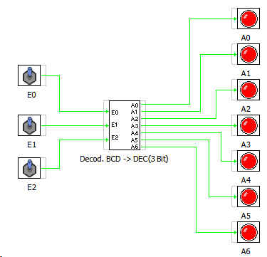

Decodificador BCD a Decimal de 3 bits es un bloque que tal como indica su nombre permite activar cualquiera de sus 7 salidas en funcion de la combinacion binaria de sus entradas.
Las entradas son E0, E1, E2
Las salidas son A0... A6
